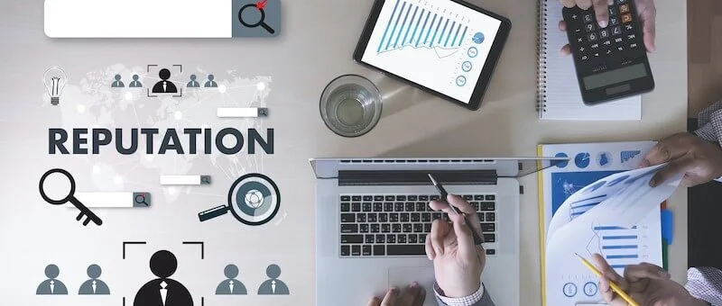

Case Study: Crisis & Action Planning
Developing a comprehensive crisis management framework for a **High-End Real Estate Developer** facing a lawsuit and community backlash that threatened to halt a major project.
The Scenario
After securing an environmental license, the client's project was hit with a lawsuit from an NGO, leading to a temporary suspension. This legal action ignited negative media attention and social media chatter, creating a pre-crisis scenario where misinformation could quickly escalate, causing reputational and financial damage.
Strategic Objectives
The core objective was to move from a reactive to a proactive position. I established a clear crisis management framework to protect the client's reputation by:
- Evaluating all potential scenarios and creating strategies to mitigate them.
- Countering opposing arguments before they could gain traction in the press and social networks.
- Re-establishing trust with the community and key stakeholders through transparent communication.
- Ensuring a coherent and consistent discourse across all company channels.
The Action Plan
I developed a multi-stage action plan that provided the client with a clear roadmap for navigating the crisis. The plan was structured around methodical, concurrent workstreams:
This included defining internal approval flows, setting up social media monitoring, creating a master Q&A document, constructing key messages to counter attacks, and developing personalized communication tactics for different audiences (e.g., local residents, activists, potential buyers).